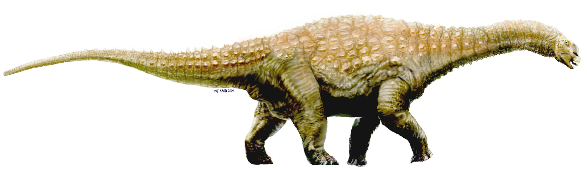
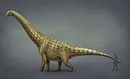
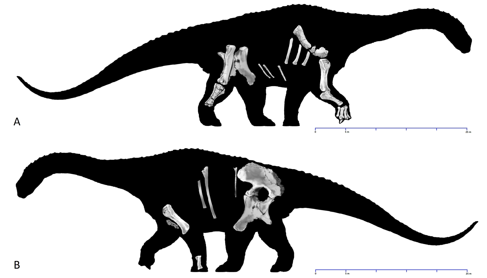
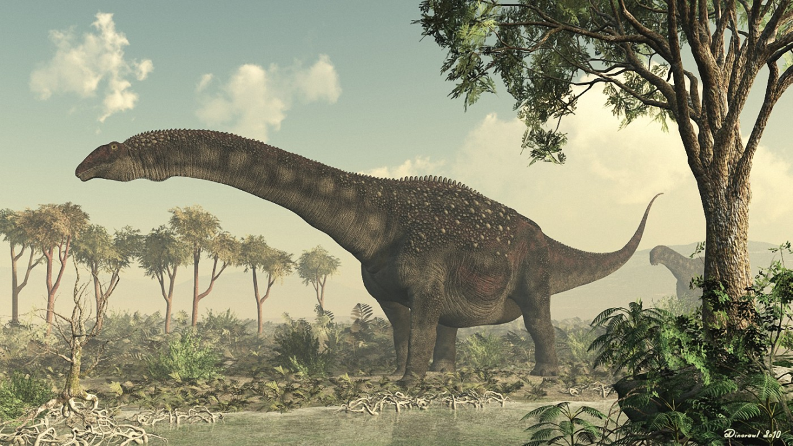

Română
Diamantinasaurusul, cunoscut și ca "Șopârla râului Diamantina", a fost numit de către Scott Hocknull în 2009. Fiind estimat la 15-16 metri lungime, acest dinazaur erbivor putea fi regăsit in Queensland, Australia, Regiunea Winton. În acel loc au fost găsite rămășițe parțiale post craniene, acest dinozaur trăind în era Albianului din Cretacic.
English
The Diamantinasaurus, also known as the "Diamantina River Lizard", was named by Scott Hocknull in 2009. Estimated at 15-16 meters long, this herbivorous dinosaur could be found in Queensland, Australia, Winton Region. Partial post-cranial remains were found at that site, this dinosaur living in the Albian era of the Cretaceous.